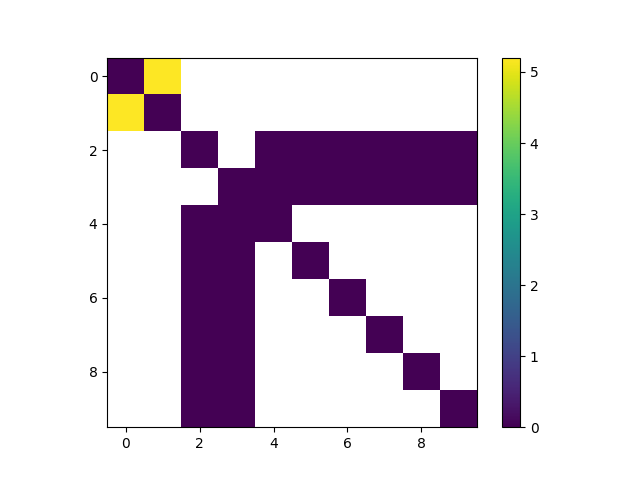
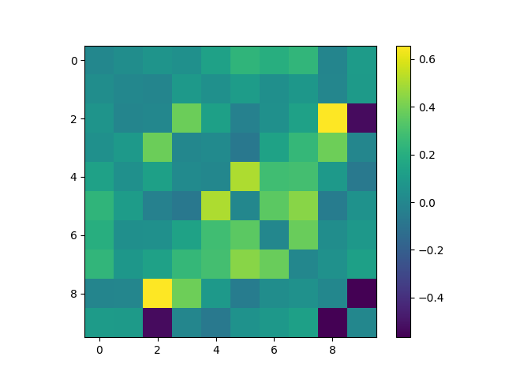

Note
Go to the end to download the full example code
Run MVCMI on HCP data¶
This example demonstrates how to run MVCMI on pre-processed HCP data.
# Authors: Padma Sundaram
# Mainak Jas
we will first load the necessary modules
import numpy as np
import matplotlib.pyplot as plt
from mvcmi import compute_cmi, compute_ccoef_pca, reduce_dim
from mvcmi.datasets import fetch_hcp_sample, load_label_ts
from joblib import Parallel, delayed
n_jobs = 1 # number of cores to use when running PCA in parallel
n_parcels = 10 # just to make example run faster
dim_red = 0.95
load the preprocessed data
data_path = fetch_hcp_sample()
label_ts_fname = data_path / 'label_ts.npz'
label_ts = load_label_ts(label_ts_fname, n_parcels=n_parcels)
done reading in label_ts
167
reduce dimensionality using PCA
do the actual CMI computation
print ("computing cmi")
cmimtx = compute_cmi(label_ts_red)
computing cmi
mvcon compute_cmi
mvcon partial_corr_mvar
(1633, 1200)
(11,)
0
1
2
3
4
5
6
7
8
9
mvcon cmui_from_pcor_mvar
/Users/mainak/Desktop/github_repos/mvcmi/mvcmi/algo.py:70: RuntimeWarning: invalid value encountered in log
cmui[ii, jj] = -0.5 * np.sum(np.log(1 - s[0:n]))
compare to correlation coefficient
print ("computing sccoef_pca")
corrmtx = compute_ccoef_pca(label_ts_red)
computing sccoef_pca
plot the CMI matrix
<matplotlib.colorbar.Colorbar object at 0x7fe17a0454f0>
plot the correlation matrix
<matplotlib.colorbar.Colorbar object at 0x7fe1a82d4fd0>
Total running time of the script: (0 minutes 48.556 seconds)